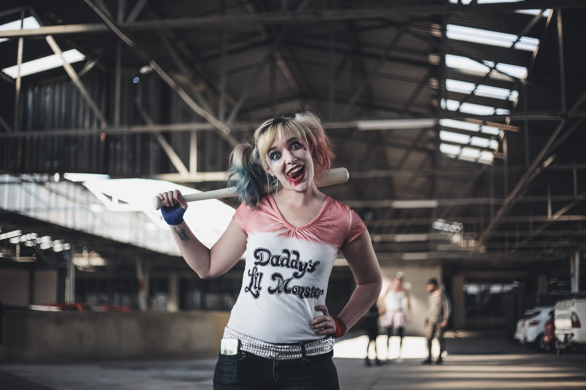

BATMAN
Bruce Wayne es el único personaje que se identifica como Batman y aparece en Batman, Detective Comics, Batman y Robin, y Batman: The Dark Knight. Dick Grayson vuelve al manto de Nightwing

Harley Quinn
La creación de Harley Quinn fue una idea de último minuto propuesta por el escritor estadounidense Paul Dini para modificar una escena del vigésimo-segundo episodio de Batman: la serie animada
Joker
Se trata de uno de los criminales más notables de Gotham City, y es el enemigo principal de Batman.Si bien sus orígenes y rasgos han variado con el transcurso
Pinguino
s un hombre bajo y grueso, conocido por su amor a las aves y sus paraguas especializados de alta tecnología. Como un mafioso y ladrón, es mejor conocido como el "señor del crimen"